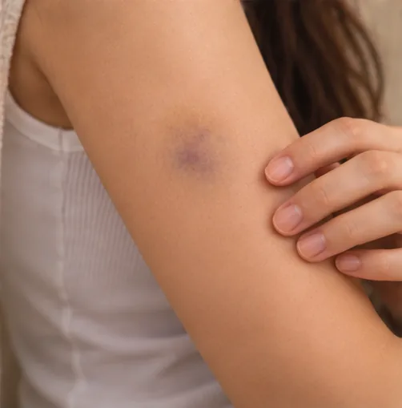

Capillary bleeding
Slow oozing of blood from the tiniest blood vessels, usually from a scrape or small cut
What it is
Capillary bleeding is when blood slowly seeps from the tiny blood vessels near the skin surface, often after a scrape, and it usually stops by itself.
- Tiny vessels near the skin
- After a scrape or minor cut
- Slow oozing, not spurting
- Which doctor
- Family doctor; hospital emergency department if bleeding will not stop
- Common in
- Anyone with a scrape or small cut; may last longer with blood-thinning medicine
- Contagious
- No
- Course
- Usually stops within minutes with firm, steady pressure
Common signs

Swelling and bruisingSwelling with ecchymosis
More signs
- Blood seeping slowly from the whole scraped area, not in a spurt
- A raw, red graze or shallow cut that stings
- Bleeding that slows and usually stops by itself as a clot forms
Why it happens

An injury or fallTrauma
Other causes
- Scratching or picking at spots, bites or scabs, and shaving nicks
- Thin, dry or fragile skin, which is more common in older people
- Blood-thinning medicine, which can make bleeding last longer
- Illnesses that affect blood clotting, such as liver disease or a low platelet count
See a doctor first if
- Blood that spurts or soaks through a cloth, or very heavy bleeding: call 999 and press firmly on the wound
- Feeling faint, very pale, cold and sweaty, or confused after bleeding: call 999
- Bleeding that does not stop after about ten minutes of firm pressure: go to hospital
- A deep or gaping cut, a dirty wound, or something stuck in the wound: go to hospital
- Bleeding or bruising for no clear reason, or many tiny red spots on the skin: see a doctor soon
- Taking blood-thinning medicine and the bleeding is hard to stop or keeps restarting: go to hospital
If any apply, please see a doctor before a session.
This page is general information. Please keep taking your normal medicine and keep seeing your doctor.
Keep taking your normal medicine and keep seeing your doctor. Our session is a gentle support and does not replace medical care.
Looking after yourself

Wash your hands oftenHand hygiene
More ways to look after yourself
- Press a clean cloth or gauze firmly on the spot for about ten minutes without lifting it to check
- For an arm or leg, raise it while you press
- Once it stops, rinse gently with clean running water, pat dry, cover with a clean dressing and change it daily
- Do not put powder, toothpaste, oil or other home remedies on the wound
Tell your therapist
- Broken, red or sore skin
- Blood-thinning medicine
- A kidney or liver condition
- Diabetes or less feeling in the skin
Your therapist will go through this with you before starting.
Questions and answers
What is Capillary bleeding?
Slow oozing of blood from the tiniest blood vessels, usually from a scrape or small cut. Capillary bleeding is when blood slowly seeps from the tiny blood vessels near the skin surface, often after a scrape, and it usually stops by itself.
What are the common signs of Capillary bleeding?
Swelling and bruising
Why does Capillary bleeding happen?
An injury or fall
How can I look after myself with Capillary bleeding?
Wash your hands often
Can an AI Body Master session help with Capillary bleeding?
A session is gentle, needle-free meridian support for your wellbeing. It does not treat or cure Capillary bleeding and never replaces your medicine or your doctor. Tell your therapist about it before the session starts.
Related conditions
References: General information based on public health sources such as Mayo Clinic, NHS, Cleveland Clinic and NCBI StatPearls.
Page updated: 2026-11-04